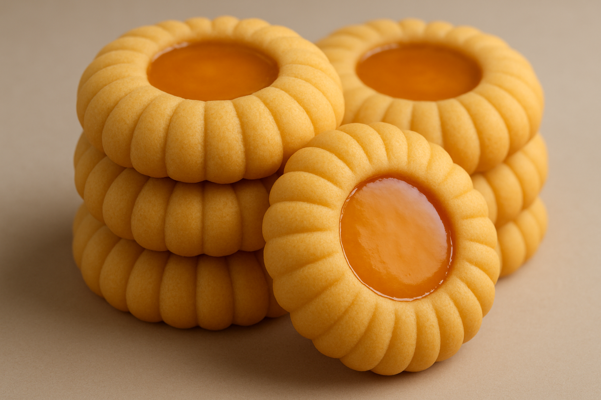

Portakal Kurabyie
Hamuru icin
- 3 su bardagi un
- 3 adet yumurta sarisi
- 1.5 su bardagi pudra sekeri
- 200g tereyag
- 1 paket vanilya
Üzeri icin
Yapilis
Geniş bir kaba unu koyun. Tereyağını ekleyip karıştırarak una yedirin.
3 yumurta sarısını, pudra şekerini ve vanilyayı ilave edip hepsini karıştırarak bir hamur hazırlayın.
Hamurdan ceviz büyüklüğünde parçalar koparıp elinizle yuvarlayın.
Kenar kısmına bıçakla çizikler atarak şekil verin.
Hamuru yağlı kağıt serilmiş tepsiye dizin.
Önceden 160 derece ısıtılmış fırında, hafif renk alana kadar pişirin.
Soğuyan kurabiyelerin üzerine portakal sosu gezdirerek servis yapın.